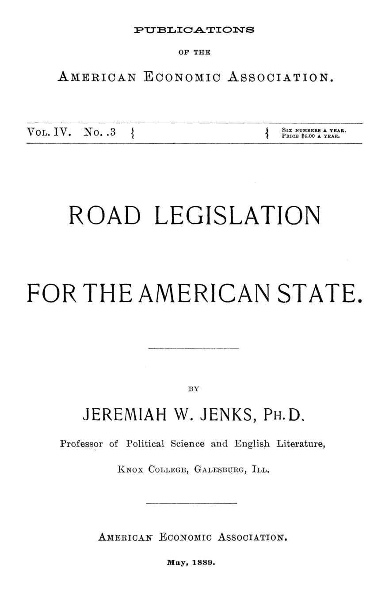

Lama, enxada e pedágio: o custo da estrada ruim nos EUA de 1889
Leitura: 8 min
Em 1889, Jeremiah Jenks calculou quanto a estrada de terra custava ao fazendeiro americano e propôs trocar o dia de trabalho obrigatório por imposto em dinheiro e engenheiros pagos.


No oeste do estado de Nova York, duas aldeias ficavam a 800 pés de altura uma da outra. A estrada antiga, traçada por uma comissão de moradores, fazia quem ia da mais baixa à mais alta subir 1.200 pés; na volta, ainda se subiam 400. Um engenheiro refez o traçado: 800 pés na ida, nenhum na volta. O caso resume o problema. Nos Estados Unidos, as estradas vicinais eram obra de amadores.
A monografia de Jeremiah W. Jenks, professor no Knox College, em Galesburg, Illinois, saiu em maio de 1889. Os governadores de Massachusetts e da Pensilvânia haviam pedido naquele inverno a revisão das leis rodoviárias. Os economistas, observa Jenks, atraídos pela ferrovia, tinham esquecido a estrada comum.
Quanto custava uma estrada de terra ao fazendeiro?
O censo de 1880 tentou estimar o custo de levar grãos da fazenda à estação. As respostas variaram muito, mas a média, conclui Jenks, ficava em pelo menos 60 centavos de dólar por 100 bushels transportados por uma milha. A oeste do lago Michigan, diz o relatório do censo, o fazendeiro gastava mais para levar um bushel por uma milha do que a ferrovia para levar uma tonelada.
A física explica a conta. Numa tabela do engenheiro Q. A. Gillmore, medida com dinamômetro numa carroça de uma tonelada, a estrada de terra em bom estado exigia 200 libras de tração; a de pedra britada sobre base de pedras grandes, 46. A mesma parelha puxava cerca de quatro vezes mais. E a estrada de terra passava mais da metade do ano fora do bom estado.
O engenheiro Clemens Herschel, de Boston, concluiu que o cavalo inglês fazia o dobro do trabalho do americano. Não por ser melhor cavalo, mas por causa da estrada:
“[O inglês] investiu em estradas perfeitas e permanentes o que o americano gasta em cavalos perecíveis.” (“invested in perfect and permanent roads what the American expends in perishable horses”)
Havia ainda o preço da terra. Illinois tinha 31.673.645 acres agrícolas, avaliados em 1880 em cerca de 32 dólares por acre. Se boas estradas de terra acrescentassem só 5 dólares por acre, o estado ganharia 160 milhões de dólares em riqueza.
Por que se pagava a estrada com dias de trabalho?
O sistema viera da Inglaterra: funcionários de estrada eleitos no município e o imposto em trabalho, pelo qual cada contribuinte cumpria alguns dias de serviço na estrada em vez de pagar em dinheiro. Numa república de população rala e tráfego local, funcionava. A ferrovia, a partir de 1830, tirou as estradas da política nacional, e o apego ao township, a unidade municipal rural, travava qualquer reforma.
Em 1889, o imposto em trabalho era usado regularmente em todos os estados, menos cinco. Seis estados, todos do Sul, nem previam imposto em dinheiro. Nenhum estado tinha supervisão geral das estradas, e em nenhum havia engenheiros empregados regularmente nas vias principais. Illinois permitia contratar um, mas a permissão quase nunca era usada.
A crítica de Jenks é prática. Sob o disfarce do imposto, muitos perdiam o dia contando histórias e fingindo trabalhar. Os próprios comissários de Illinois estimavam que pelo menos metade do imposto em dinheiro era desperdiçada por ignorância ou descuido, e uma parte maior ainda do trabalho: de 2 a 2,5 milhões de dólares por ano.
Onde as estradas principais eram de companhias de pedágio, como em Maryland, elas não as melhoravam nem deixavam ninguém melhorá-las.
O que a Europa fazia diferente?
Classificava as estradas pela importância e dava a cada nível um responsável. Na Prússia havia três classes: estradas do Estado, provinciais e locais. A França, que segundo Jenks tinha o sistema mais completo e as melhores estradas da Europa, tinha cinco. As routes nationales eram mantidas pelo Estado e geridas pelos engenheiros de Ponts et Chaussées; as demais ficavam com os departamentos e as comunas, sob o conselho geral.
A diferença estava na gestão. Na França, o trabalho obrigatório era dirigido por agents voyers treinados e por cantonniers fixos em cada trecho. Mesmo assim, diz Waddington, o trabalhador pago fazia mais e melhor que o contribuinte; só o carreto saía mais barato em prestation. Se nem os franceses extraíam bom trabalho braçal do imposto, conclui Jenks, os americanos não extrairiam.
A Inglaterra mostrava o fim do pedágio. Os turnpike trusts chegaram a 104.772 milhas em 1840, mas o censo de 1871 contou cerca de 5.000 cobradores na Inglaterra e na Escócia, e muitos trusts estavam afundados em dívidas. As leis de 1862 a 1878 agruparam paróquias em distritos e classificaram as estradas principais; a de 1888 entregou-as aos condados.
O que Jenks propunha às assembleias estaduais?
O princípio vem antes: o custo deve ser repartido conforme o benefício. Como a cidade e os donos de terra também ganham com a estrada, o pedágio é injusto em princípio e deve ser abolido assim que os direitos das companhias permitirem. As estradas seriam divididas em três classes: as principais, geridas e pagas pelo condado; as de ligação, pagas sobretudo pelos municípios e geridas pelo condado; e as locais, a cargo do município.
O ponto central é o engenheiro civil assalariado, contratado pelo condado, e não eleito. Ele faria mapas topográficos e apresentaria todo outono o relatório do ano e o plano do seguinte, com orçamento. Pelas contas dos comissários, o desperdício de um condado médio compraria dois rolos compressores a vapor por ano e pagaria duas vezes o salário do engenheiro.
O resto do plano: abolir o imposto em trabalho, salvo na parcela acima do limite ordinário; permitir empréstimos, sob condições estritas, para estradas permanentes; e criar uma junta estadual de três engenheiros para reunir e publicar os relatórios dos condados. No fim, Jenks reduz tudo a duas exigências: classificar as estradas e, sobretudo, pôr gente qualificada no comando.
“Nenhum sistema pode dar certo se [...] não garantir construtores de estradas qualificados para supervisionar o trabalho.” (“no system can succeed that does not [...] secure skilled roadmakers to supervise the work”)
Na minha leitura
Na minha leitura, o texto de Jenks trata do custo invisível de um tributo que parece barato. O dia de trabalho na estrada não aparecia em orçamento algum e por isso parecia gratuito. Mas era pago duas vezes: no dia perdido e no cavalo que rendia menos. Trocá-lo por imposto em dinheiro, com gestão profissional, é antes de tudo tornar o custo visível e alguém responsável por ele.
O dilema permanece. Jenks queria escala de condado e engenheiro de carreira, mas sabia que o eleitor local resiste a perder poder para instâncias maiores. Toda reforma de infraestrutura local escolhe entre a proximidade de quem usa a estrada e a competência de quem sabe construí-la. Classificar e dar a cada nível o que lhe cabe continua sendo a saída mais sensata.
Glossário
- Imposto em trabalho
- Tributo pago com dias de serviço pessoal, de animais ou de carroças na conservação das estradas, em vez de dinheiro.
- Comutação
- Conversão do dia de trabalho devido em pagamento em dinheiro, segundo uma tabela oficial.
- Turnpike
- Estrada com pedágio, construída e mantida por uma companhia ou trust autorizado a cobrar tarifas dos usuários.
- Township
- Unidade municipal rural americana, com assembleia de eleitores e funcionários eleitos, inclusive os de estradas.
- Prestation en nature
- Versão francesa do imposto em trabalho: três dias anuais de serviço do contribuinte e de seus animais e carroças.
Fontes
- Road Legislation for the American State (pp. 9–83). JSTOR · Internet Archive (PDF)
- Sumário da edição no JSTOR: Publications of the American Economic Association, vol. 4, nº 3.
Documento em domínio público (EUA, publicado antes de 1931), via JSTOR Early Journal Content e Internet Archive. Resumo e comentário do autor deste site, sem afiliação com a American Economic Association. Encontrou um erro? Escreva: a correção é publicada no próprio texto, com data.
← Nº 18 · Socialismo sem saber: o inventário de Sidney Webb sobre a Inglaterra Nº 20 · Filadélfia, 1888: a noite em que a economia deixou de ser seita →